컴퓨터활용능력-1급 (2003-09-28 기출문제)
1과목: 컴퓨터 일반
1. 하드웨어가 제대로 작동하지 않을 경우 체크해야 하는 항목으로 가장 거리가 먼 것은?
- 드라이버가 올바른지 확인한다.
- 다른 하드웨어와 충돌이 없는지 확인한다.
- 운영체제를 다시 설치한다.
- 하드웨어의 고장 유무를 확인한다.
(정답률: 87%)

2. IP경로를 설정하며 네트워크와 네트워크간을 연결할 때 사용되는 필수적인 네트워크 장비는 무엇인가?
- 라우터
- 허브
- 브리지
- 모뎀
(정답률: 55%)
3. 자외선과 같은 특수한 장치를 이용하여 기억된 내용을 지우고 다시 사용할 수 있는 ROM을 무엇이라 하는가 ?
- Mask ROM
- PROM
- EPROM
- EEPROM
(정답률: 58%)
4. 다음은 한글 Windows 98에서 사용하는 단축키에 대한 설명이다. 가장 올바르지 않은 것은?
- F3 : 검색(파일/폴더 찾기) 기능 실행
- F4 : 최신 정보로 고치기
- F2 : 선택한 파일/폴더의 이름 변경하기
- F1 : 도움말 보기
(정답률: 84%)
5. 컴퓨터 주변장치에서 CPU의 관심을 끌기 위해 발생하는 신호로서 발생한 장치 중 우선 순위가 가장 높은 장치에 이것을 허용한다. 두 개 이상의 하드웨어가 동일한 이것을 사용하면 충돌이 발생하게 되는데 이 때 이것을 무엇이라고 하나?
- DMA
- I/O
- IRQ
- Plug & Play
(정답률: 68%)
6. TCP/IP 프로토콜 설정에 있어 서브넷 마스크(Subnet Mask)의 역할은 ?
- 도메인 명을 IP주소로 변환해 주는 서버를 지정
- 네트워크 식별자를 추출
- 호스트의 수를 식별
- 사용자의 수를 식별
(정답률: 57%)
7. 전용 회선에서 각 회선의 최대 전송 속도를 나타낼 때 사용하는 단위를 속도가 느린 것부터 순서대로 올바르게 나열한 것은?
- T1 → T2 → T3 → E1 → E2 → E3
- T1 → E1 → T2 → E2 → T3 → E3
- T1 → E1 → E2 → T2 → E3 → T3
- T1 → E1 → T2 → E2 → E3 → T3
(정답률: 49%)
8. 컴퓨터를 윈도우98 시스템으로 부팅 하려고 한다. 다음에 나열된 파일 중에서 부팅 시 사용되지 않는 파일은?
- win.ini
- autoexec.bat
- msdos.sys
- system.1st
(정답률: 55%)
9. 다음 중 인터넷 서비스의 기본 포트 번호가 잘못 연결된 것은?
- FTP: 21
- NEWS: 119
- WWW: 90
- TELNET: 23
(정답률: 68%)
10. 동영상 파일을 생성하고자 한다. 캠코더(30fps)를 통해서 들어오는 데이터는 한 화소에 8비트가 사용되며 640×480의 공간 해상도를 갖는다. 영상만 고려했을 때 동영상 1초의 대략적인 용량은? 단, fps는 1초당 프레임수(frame per second)를 의미함.
- 약 9 MB
- 약 91 MB
- 약 9 KB
- 약 90 KB
(정답률: 59%)
11. 다음 중 프로토콜(Protocol)과 그 역할이 가장 옳지 않게 연결된 것은?
- SNMP : 간이 망 관리 프로토콜로 번역되며, 네트워크 관리를 위한 프로토콜
- NNTP : 유즈넷 뉴스(Usenet News) 또는 네트워크 뉴스(Network News)의 기사를 전송하기 위한 프로토콜
- XTP : 점 대 점 통신 규약(PPP)으로 TCP/IP를 사용하는 경우의 망 제어 규약. 원격 클라이언트에 IP 주소를 할당하거나 TCP/IP 헤더의 압축을 행하는 데 사용한다.
- SMTP : 인터넷에서 전자우편을 전송할 때 이용되는 표준 프로토콜
(정답률: 65%)
12. 아래 그림은 디스플레이 등록정보 그림이다. 다음 중 틀린 것은 무엇인가?
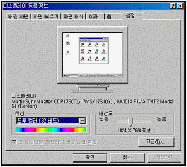
- 더 많은 색상을 화면에 표시하기 위해서는 비트 수를 늘려야 한다.
- 해상도를 낮추면 더 넓은 영역을 화면에 표시할 수 있다.
- ‘디스플레이’라고 써 있는 부분에는 컴퓨터에서 현재 설정된 모니터와 비디오카드의 이름을 보여준다.
- 모니터와 비디오카드에 대한 세부 설정을 하기 위해서는 [고급] 버튼을 누르면 된다.
(정답률: 75%)
13. 다음 중 마우스 끌기에 대한 설명으로 가장 옳지 않은 것은?
- 특정한 파일이나 폴더를 동일한 드라이브내의 다른 폴더로 드래그하면 해당 파일이나 폴더가 옮겨진다.
- Alt + Shift를 누른 채 특정한 파일이나 폴더를 다른 폴더로 드래그 하면 해당 파일이나 폴더에 대한 바로 가기가 생성된다.
- Shift를 누른 채 특정한 파일이나 폴더를 다른 폴더로 드래그 하면 해당 파일이나 폴더가 옮겨진다.
- 동일한 드라이브 내에서 Ctrl를 누른 채 특정한 파일이나 폴더를 드래그 하면 해당 파일이나 폴더가 복사된다.
(정답률: 58%)
14. 윈도우즈에서 CD-ROM이나 사운드 카드가 인식되지 않아 이를 해결하고자 한다. 가장 적절한 제어판의 항목은 무엇인가?
- 멀티미디어 및 사운드
- 사용자
- 프로그램 추가/제거
- 시스템
(정답률: 59%)
15. Windows 98에서 시스템이 기동되면서 자동으로 [탐색기]를 실행시키고자 하는 경우 레지스트리에서 등록시키는 방법의 설명으로 틀린 것은 어느 것인가?
- 실행 창에서 regedit 명령을 이용하여 레지스트리 편집기를 실행한다.
- HKEY_LOCAL_MACHINE]-[Software]-[Microsoft]-[Windows]-[CurrentVersion]-[Policies]를 선택한다.
- [편집] 메뉴에서 [문자열 값]을 이용하여 새로운 항목을 작성한다.
- [값의 데이터]에 탐색기의 경로를 “C:\windows\Explorer.exe” 와 같이 입력하고 [확인] 버튼을 누른다.
(정답률: 48%)
16. 다음 중 무선 인터넷과 관련이 없는 용어는?
- WAP(Wireless Application Protocol)
- WLL(Wireless Local Loop)
- WML(Wireless Markup Language)
- WTP(Wireless Transaction Protocol)
(정답률: 51%)
17. 미국의 애플(Apple)사와 TI(Texas Instrument)사가 공동으로 디자인한 ‘Firewire' 를 표준화한 것으로 컴퓨터와 디지털 가전기기를 연결해 데이터를 교환할 수 있게 하는 직렬(Serial) 인터페이스 방식은?
- IEEE 1394
- USB
- IDE
- SCSI
(정답률: 62%)
18. 다음 중 CapsLock, NumLock, ScrollLock 키를 누를 때 신호음이 나도록 지정하는 기능을 수행하는 방법으로 옳은 것은?
- [제어판]의 [내게 필요한 옵션]에서 [키보드] 탭을 선택한 후 전환키의 사용을 지정한다.
- [시스템 등록정보]의 [장치관리자] 탭에서 전환키 사용을 지정한다.
- [디스플레이 등록정보]의 [설정] 탭에서 전환키 사용을 지정한다.
- [제어판]의 [키보드]에서 [일반] 탭을 선택한 후 전환키의 사용을 지정한다.
(정답률: 67%)
19. 컴퓨터 시스템에 침입 차단 시스템(firewall)을 설치하는 경우 외부와 연결하여 통신을 하도록 만들어 놓은 서버로 HTTP, FTP, Gopher 프로토콜을 지원하는 것은?
- Web Server
- Client Sever
- Proxy Server
- TCP/IP
(정답률: 73%)
20. 멀티미디어에서 사용되는 비디오 종류에 관한 설명중 가장 거리가 먼 것은?
- JPEG : 정지 영상을 압축하고 복원하는 알고리즘
- MPEG : 동영상을 압축하고 복원하여 재생하는 알고리즘
- DVD : 디지털 압축 기술을 이용하여 동영상을 저장하는 기술로 저장 용량은 700MB
- AVI : 마이크로소프트사가 개발한 윈도우의 RIFF 규격을 따르는 사운드와 동영상 파일
(정답률: 60%)
2과목: 스프레드시트 일반
21. 다음 중 엑셀의 인쇄 기능에 대한 설명으로 올바른 것은?
- 워크시트에서 숨긴 열이나 숨긴 행도 인쇄시에는 모두 출력된다.
- 인쇄되는 모든 쪽에 제목으로 열 제목행을 표시하려면 [파일]-[페이지 설정]에서 [인쇄] 탭을 선택하여 [반복할 행]을 지정하면 된다.
- 워크시트에 자료가 많을 경우 자동으로 페이지 구분선이 삽입되어 인쇄된다. 임의의 위치에서 페이지를 나누려면 [삽입]-[페이지 나누기]를 설정하면 된다.
- [페이지 설정] 대화상자의 [페이지] 탭에서 인쇄 배율을 지정하거나 자동 맞춤을 지정하여도 페이지 구분은 사용자가 지정한 페이지 구분대로 인쇄된다.
(정답률: 43%)
22. 다음 중 메모에 대한 설명으로 옳지 않은 것은?
- 셀의 내용에 대해 보충설명을 기록할 때 사용한다.
- [Shift] + [F3] 키를 누른 후 메모를 삽입할 수 있다.
- 메모의 내용이 항상 화면에 표시되게 설정할 수 있으며, 서식을 설정할 수 있다.
- 메모가 있는 우측 상단에 빨간 표시가 나타나며, 메모 상자의 크기 조절이 가능하다.
(정답률: 69%)
23. 다음 중 워크시트에 포함된 도형을 인쇄하고 싶지 않을 때의 작업 과정으로 올바른 것은?
- 인쇄하지 않을 도형을 선택하여 오른쪽 마우스를 클릭 하여 단축 메뉴에서 [도형서식]을 선택한 후 [속성]에서 ‘개체 인쇄’의 체크 표시를 없앤다.
- 인쇄하지 않을 도형을 선택하여 오른쪽 마우스를 클릭하여 단축 메뉴에서 [도형서식]을 선택한 후 [색과 선]에서 ‘반투명’ 을 선택한다.
- [파일]-[페이지 설정] 메뉴를 선택하여 [시트] 탭에서 ‘도형 숨기기’를 선택한다.
- [파일]-[페이지 설정] 메뉴를 선택하여 [시트] 탭에서 ‘흑백으로’를 선택한다.
(정답률: 66%)
24. 다음 그림과 같이 사용자 정의 폼이 초기화될 때 과목선택 콤보상자(ComboBox1)에 현재 작업중인 워크시트의 [A1:A4] 영역의 셀 값이 읽어 들여지도록 이벤트를 작성하기 위해서 괄호 안에 입력할 속성으로 가장 올바른 것은?
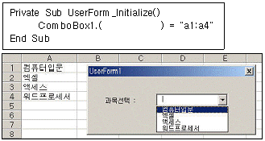
- AddItem
- ListFillRange
- ColumnCount
- RowSource
(정답률: 48%)
25. 다음 중 작업파일을 보호하기 위해서 암호를 설정하는 방법에 대한 설명으로 옳지 않은 것은?
- 암호에는 문자, 숫자, 기호 등을 사용할 수 있다.
- 암호 길이는 15자까지 사용할 수 있다.
- 암호 입력시 열기 암호와 쓰기 암호로 구분된다.
- 쓰기 암호는 대소문자를 구별하지 않는다.
(정답률: 68%)
26. 다음 중 웹 페이지에 있는 표를 엑셀의 워크시트로 가져오는 방법에 대한 설명으로 옳지 않은 것은?
- 웹 페이지에 있는 표를 복사하여 엑셀 시트에 붙여 넣기를 한다.
- HTML 파일이나 표를 드래그 하여 시트 위에 드롭 한다.
- 엑셀의 [데이터]-[외부 데이터 가져오기]-[새 웹 쿼리]를 사용한다.
- 엑셀의 [편집]-[시트 이동/복사]를 사용한다.
(정답률: 55%)
27. 다음 중 시나리오 작성에 관한 설명으로 옳지 않은 것은?
- 시나리오란 가상의 상황에 맞추어 값을 변화시킨 후 결과 값의 변화를 예측해 볼 수 있다.
- 여러 시나리오를 비교하기 위해 시나리오를 한 페이지에 요약하는 보고서를 만들 수 있다
- 시나리오 요약은 피벗 테이블 형식으로는 작성할 수 없다.
- 시나리오를 작성할 때 변경 셀에는 데이터를 변경할 셀의 범위를 지정한다.
(정답률: 79%)
28. 다음 시트에서 부서명이 '판매1부'에 속한 직원들의 급여의 평균을 [C10] 셀에 구하는 수식으로 올바른 것은?
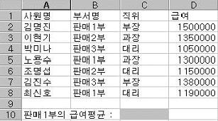
- {=AVERAGE(B2:B8="판매1부",D2:D8)}
- ={AVERAGE(B2:B8="판매1부",D2:D8)}
- {=AVERAGE(IF(B2:B8="판매1부",D2:D8))}
- ={AVERAGE(IF(B2:B8="판매1부",D2:D8))}
(정답률: 71%)
29. 다음 중 셀 범위에 이름을 작성하는 작업에 관련된 설명으로 옳지 않은 것은?
- 이름을 작성할 셀 범위를 설정한 후 이름 상자에 작성할 이름을 입력하고 [Enter] 키를 누르면 이름이 지정된다.
- 이름을 지정할 셀 범위를 설정한 후 [삽입]-[이름]-[정의]를 실행한 후 표시되는 대화 상자에서 이름을 지정할 수 있다.
- 이름은 문자나 밑줄, 중 하나로 시작하여야 하며 숫자로 시작될 수 없다.
- [A1:A4] 영역의 점수를 ‘국어’로 이름을 지정한 경우, ‘국어’ 이름을 이용하여 ‘=국어+A5’와 같이 수식을 작성하면 정상적으로 수식의 결과를 구할 수 있다.
(정답률: 51%)
30. 다음 워크시트에서 [A8] 셀에 '서울' 지역의 '2000년' 매출의 합계를 구하는 수식으로 올바른 배열 함수 식은?
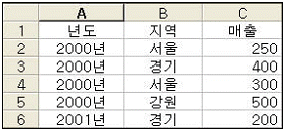
- {=SUM((A2:A6="2000년")+(B2:B6="서울")+(C2:C6))}
- {=SUM((A2:A6="서울")+(B2:B6="2000년")+(C2:C6))}
- {=SUM((A2:A6="서울")*(B2:B6="2000년")*(C2:C6))}
- {=SUM((A2:A6="2000년")*(B2:B6="서울")*(C2:C6))}
(정답률: 60%)
31. 다음 차트에 대한 설명으로 옳지 않은 것은?
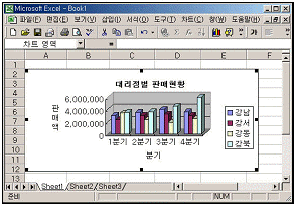
- 차트의 제목은 차트 작성시 자동으로 설정된 것이다.
- 데이터의 계열은 모두 4개로 되어있다.
- 범례는 자동으로 추가된 것이다.
- 차트의 종류는 3차원 효과의 묶은 세로막대형이다.
(정답률: 71%)
32. 다음 중 연산자와 해당 연산자의 기능을 하는 함수 식의 이름이 잘못 연결된 것은 어느 것인가?
- * : PRODUCT
- + : SUM
- / : MOD
- & : CONCATENATE
(정답률: 57%)
33. 다음과 같이 [데이터]-[레코드 관리]을 실행하였을 때의 작업에 대한 설명으로 옳지 않은 것은?
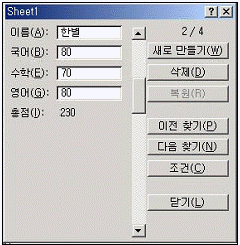
- 워크시트에 입력된 자료를 레코드 단위로 표시하면서 데이터를 추가하거나 삭제할 수 있다.
- 현재 총 레코드 개수가 4개이며, 두 번째 레코드를 보여주고 있다.
- 작업 중에 수식으로 입력된 데이터와 문자열 데이터를 수정할 수 있다.
- 데이터를 검색할 때 조건에 연산자를 사용할 수 있다.
(정답률: 51%)
34. 다음에 나열된 작업 과정을 매크로를 작성하는 순서대로 올바르게 나열한 것은?
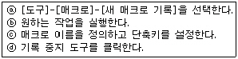
- ⓐ-ⓑ-ⓒ-ⓓ
- ⓓ-ⓑ-ⓒ-ⓐ
- ⓐ-ⓒ-ⓑ-ⓓ
- ⓓ-ⓒ-ⓑ-ⓐ
(정답률: 71%)
35. 아래의 워크시트에서 판매 수익이 2,000,000원에서 10,000,000원으로 되기 위해서 판매량이 얼마가 되어야 하는지를 구하는 [목표값 찾기] 대화상자의 수식 셀, 찾는 값, 값을 바꿀 셀의 내용이 순서대로 맞게 나열된 것은?
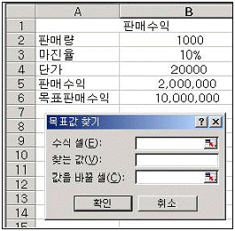
- $B$5, 10000000, $B$2
- $B$5, $B$6, $B$2
- $B$2, 10000000, $B$5
- $B$2, $B$6, $B$5
(정답률: 71%)
36. 아래의 시트에서 [A8] 셀에 =INDEX(A1:C6, MATCH(12,B1:B6,1), MATCH(3,A3:C3,1)) 수식을 입력했을 때의 계산 결과로 올바른 것은?
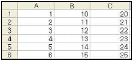
- 12
- 3
- 14
- 20
(정답률: 54%)
37. 다음 프로그램 코드 중에서 실행 결과가 [A1:C5] 영역을 범위로 설정하는 기능을 수행하는 것으로 올바른 것은?
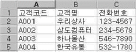
- Range(“A3”).Entirerow.Select
- Range(“A3:C3”).Select
- Range(“A3”).End(xlDown).select
- Range(“A3”).CurrentRegion.Select
(정답률: 54%)
38. 아래 시트에서 [A13:B15] 영역에 입력된 내용을 조건으로 고급필터를 실행했을 때의 결과에 대한 설명으로 올바른 것은?
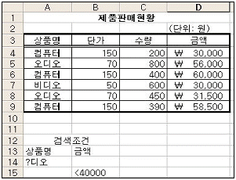
- 상품명이 오디오이고 금액이 40000원 미만인 데이터가 출력된다.
- 상품명이 오디오, 비디오이고 금액이 40000원 미만인 데이터가 출력된다.
- 상품명이 오디오이거나 금액이 40000원 미만인 데이터가 출력된다.
- 상품명이 오디오, 비디오이거나 금액이 40000원 미만인 데이터가 출력된다.
(정답률: 69%)
39. 다음 중 매크로의 실행 방법에 대한 설명으로 옳지 않은 것은?
- 매크로 작성 시 바로 가는 키를 지정해 두었다면 바로 가는 키를 눌러 매크로를 실행할 수 있다.
- 양식 도구 모음에서 단추를 만든 다음, 해당 단추를 누르면 미리 설정한 매크로를 실행하도록 만들 수 있다.
- [Ctrl] + [F8] 키의 조합을 통해 매크로 이름을 선택한 후 실행 단추로 실행할 수 있다.
- [도구]-[매크로]-[매크로]를 실행하여 매크로 이름을 선택 한 후, 실행 단추로 실행할 수 있다.
(정답률: 66%)
40. 다음 중 추세선을 사용할 수 있는 차트들만 나열한 것으로 올바른 것은?
- 세로막대형, 영역형, 원형, 꺾은선형
- 주식형, 영역형, 방사형, 가로막대형
- 도넛형, 가로막대형, 분산형, 주식형
- 가로막대형, 주식형, 분산형, 꺾은선형
(정답률: 65%)
3과목: 데이터베이스 일반
41. 폼이나 보고서의 특정 컨트롤에서 =[단가]*[수량]*(1-[할인율]) 와 같은 계산식을 사용하고자 한다. 이 때 계산 결과 소수점이 나오는 경우 이를 화폐 단위로 변환할 때 사용하는 함수로 가장 적절한 것은?
- CCur
- Atn
- Format
- Eval
(정답률: 50%)
42. 다음과 같이 설정되어 있는 [관계 편집] 대화상자에 대한 설명으로 맞지 않는 것은?
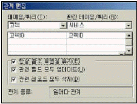
- 고객과 서비스 테이블간에 일대다 관계를 설정하고 있다.
- 고객.고객ID는 기본 키(PK) 혹은 유일한 필드이고 서비스.고객ID는 외부 키(FK)이다.
- 고객.고객ID에 존재하지 않는 값을 서비스.고객ID의 필드 값으로 입력할 수 없다.
- 서비스 테이블의 레코드를 삭제하면 삭제된 레코드의 고객ID와 같은 값을 갖는 고객 테이블의 레코드가 삭제된다.
(정답률: 59%)
43. 다음 중 기본 키(key) 설정에 대한 설명으로 옳지 않은 것은?
- 필드가 중복된 데이터 값을 가지면 기본 키로 설정될 수 없다.
- 필드가 NULL 값을 갖는 경우에도 기본 키로 설정될 수 있다.
- 다 대 다 관계에 있는 다른 두 테이블을 연결하기 위해 사용되는 테이블의 경우에는 일반적으로 다중 필드를 기본 키로 사용한다.
- 테이블을 대표할 만한 고유한 값을 갖는 단일 필드가 없는 경우에는 여러 개의 필드를 조합하여 기본 키로 사용할 수 있다.
(정답률: 64%)
44. 다음 중 보고서 작업에 대한 설명으로 가장 옳지 않은 것은?
- 폼에서와는 달리 보고서에서는 컨트롤에 데이터를 입력할 수 없다.
- 보고서의 컨트롤에서는 컨트롤 원본을 이용하여 특정 필드에 바운드 시킬 수 없다.
- 데이터의 크기가 일정하지 않은 경우 확장 가능 속성을 ‘예’로 설정하면 인쇄 시에 데이터의 크기에 맞게 텍스트 박스의 세로 길이가 확장되어 표시된다.
- 그룹 바닥글이나 보고서 바닥글 등에 요약 정보를 표시할 수 있다.
(정답률: 56%)
45. 인덱스에 관한 설명으로 옳지 않은 것은?
- 데이터의 양이 많아질수록 데이터를 다양하고 쉽게 효율적으로 검색하는 기능을 제공한다.
- 테이블에서 인덱스 필드 속성을 정의하려면 인덱스 필드에서 ‘예’라고 설정하면 된다.
- 많은 필드로 구성된 테이블에서 여러 개의 필드로 검색조건을 제공해야하는 경우 다중필드 인덱스로 정의하면 효과적으로 검색할 수 있다.
- 중복되는 값을 많이 가지고 있는 필드를 인덱스로 하는 것이 좋다.
(정답률: 62%)
46. 입력란 컨트롤에 다음과 같은 식을 입력하였다. 다음 식에 대한 설명으로 옳은 것은?
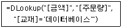
- 금액 테이블에서 데이터베이스 교재의 주문량
- 금액 테이블에서 데이터베이스 교재의 주문량과 금액
- 주문량 테이블에서 데이터베이스 교재의 주문량
- 주문량 테이블에서 데이터베이스 교재의 금액
(정답률: 59%)
47. 보고서 작성 시에 사용되는 여러 종류의 마법사 중 거래 명세서나 세금 계산서 작성에 가장 적합한 것은?
- 차트 마법사
- 주소 레이블 마법사
- 우편 엽서 마법사
- 업무 양식 마법사
(정답률: 76%)
48. 다음과 같은 서브 프로시저가 호출되어 수행될 때 메시지 박스에 출력되는 변수 total의 값은 어느 것인가?
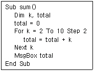
- 12
- 20
- 30
- 54
(정답률: 55%)
49. 데이터베이스 설계시 데이터의 정규화(normalization)에 대한 설명 중 옳지 않은 것은?
- 데이터의 이상(anomaly)이 발생하지 않도록 하는 것이다.
- 속성(attribute) 수가 적은 릴레이션 스키마들로 분할하는 과정이다.
- 릴레이션의 속성들 사이의 종속성 개념에 기반을 두고있다.
- 릴레이션을 항상 최상위 수준의 정규형으로 정규화해야 한다.
(정답률: 65%)
50. 데이타베이스의 테이블을 엑셀 파일 형식으로 변환하여 저장하기 위하여 사용하는 메뉴는?
- 내보내기
- 보내기
- 외부 데이터 가져오기
- 찾아 바꾸기
(정답률: 60%)
51. 전통적인 파일 처리방식에 비해 데이터베이스를 이용하는 경우의 장점으로 가장 거리가 먼 것은?
- 데이터 공유가 용이하다.
- 프로그램에 독립적인 데이터의 관리가 가능하다.
- 어플리케이션의 개발 및 유지 보수가 용이하다.
- 데이터 관리 비용 및 공간을 절감할 수 있다.
(정답률: 49%)
52. 보고서의 특정 텍스트 박스에서 <매출조회> 폼의 txt기준일 컨트롤의 값을 참조하고자 한다. 이 텍스트 박스의 컨트롤 원본을 어떻게 설정하면 되는가?
- = forms!매출조회!txt기준일
- = forms.매출조회.txt기준일
- = forms!매출조회.txt기준일
- = forms.매출조회!txt기준일
(정답률: 48%)
53. 다음 질의는 어떠한 결과를 표시하는가?
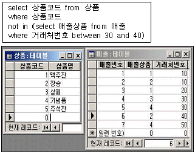
- 1 , 5
- 2 , 3 , 4
- 1 , 2 , 4
- 3 , 5
(정답률: 53%)
54. <직원> 테이블에서 나이가 20에서 50사이인 직원의 사번, 이름, 직급을 검색하는 질의 문으로 가장 옳은 것은?
- select 사번, 이름, 직급 from 직원 where 나이 in (20, 50)
- select 사번, 이름, 직급 from 직원 where 나이 >= 20 and <= 50
- select 사번, 이름, 직급 from 직원 where not 나이 < 20 and not 나이 > 50
- select 사번, 이름, 직급 from 직원 where 나이 between 20 or 50
(정답률: 36%)
55. 테이블의 특정 필드에는 1에서 4까지의 값만을 입력을 받으려고 한다. 이 때 가장 적당한 유효성 검사 규칙은?
- >=1 and <=4
- <=1 and >=4
- >1 or <4
- <1 or >4
(정답률: 75%)
56. 서비스를 신청한 고객의 서비스 신청번호, 모델명, 고객의 이름, 주소를 조회하고자 한다. 가장 적당한 SQL 문은?
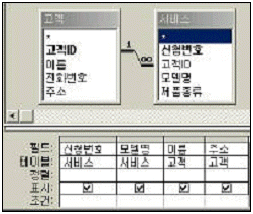
- select 서비스.신청번호, 서비스.모델명, 고객.이름, 고객.주소 from 서비스 inner join 고객 where 서비스.고객ID = 고객.고객ID
- select 서비스.신청번호, 서비스.모델명, 고객.이름, 고객.주소 from 서비스 inner join 고객 on 서비스.고객ID = 고객.고객ID
- select 서비스.신청번호, 서비스.모델명, 고객.이름, 고객.주소 from 서비스 where 서비스.고객ID = 고객.고객ID
- select 서비스.신청번호, 서비스.모델명, 고객.이름, 고객.주소 from 고객 where 서비스.고객ID = 고객.고객ID
(정답률: 45%)
57. 인쇄 버튼(cmd인쇄)에 대한 클릭 이벤트 프로시저는 다음과 같다. 이에 대한 설명으로 가장 옳지 않은 것은?
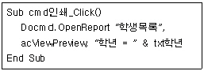
- 버튼을 클릭하면 ‘학생목록’ 보고서를 ‘미리보기’ 형태로 연다.
- 현재 폼에는 ‘txt학년’이라는 컨트롤이 존재하는 것으로 볼 수 있다.
- 현재 폼이 사용하는 데이터에는 ‘학년’이라는 필드가 존재하는 것으로 볼 수 있다.
- 보고서는 ‘학년’ 필드의 값이 ‘txt학년’ 컨트롤에 입력된 값과 동일한 데이터만을 표시하게 된다.
(정답률: 35%)
58. 폼에서 특정 컨트롤의 값을 수정할 수 없도록 보호하려고 한다. 이 경우 컨트롤의 어떤 속성을 이용해야 하는가?
- 잠금(Locked)
- 컨트롤 원본(ControlSource)
- 화면 표시(visible)
- 레코드 원본(RecordSource)
(정답률: 74%)
59. 다음은 <성적> 테이블에서 영어성적이 제일 높은 사람부터 학번, 영어성적을 조회하려고 한다. 옳은 것은?
- select 학번,영어성적 from 성적 order by 영어성적 desc;
- select 학번,영어성적 from 영어성적 order by 성적;
- select 학번,영어성적 from 성적 order by 영어성적 asc;
- select 학번,영어성적 from 영어성적 order by 성적 desc;
(정답률: 57%)
60. 보고서의 영역에 대한 설명 중 가장 옳지 않은 것은?
- 페이지 바닥글 영역은 매 페이지의 아랫 부분에 표시된다.
- 그룹 머리글 영역은 새로운 그룹의 데이터가 시작되기 전에 표시된다.
- 본문 영역은 반복적으로 값을 표시하는 부분이다.
- 보고서 바닥글 영역은 보고서의 마지막 쪽의 페이지 바닥글 아래에 표시된다.
(정답률: 51%)